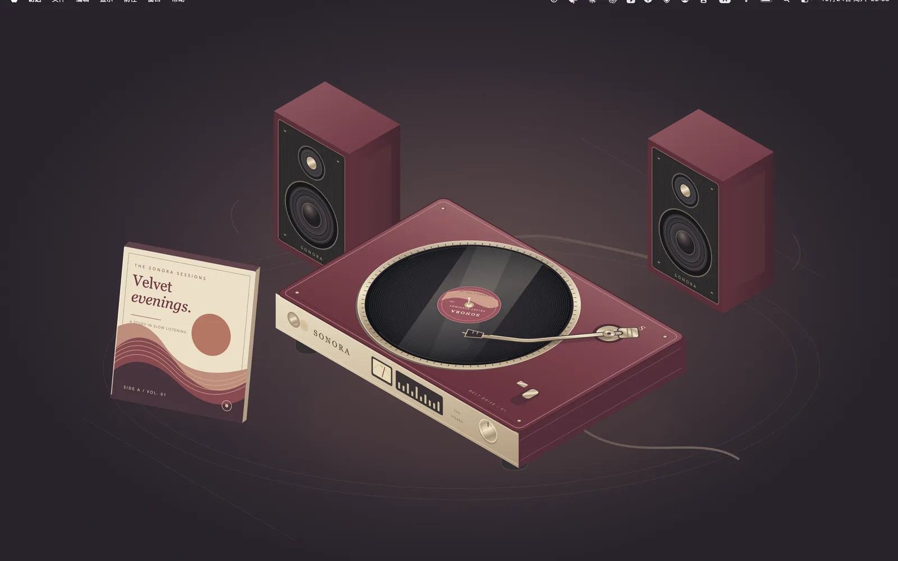
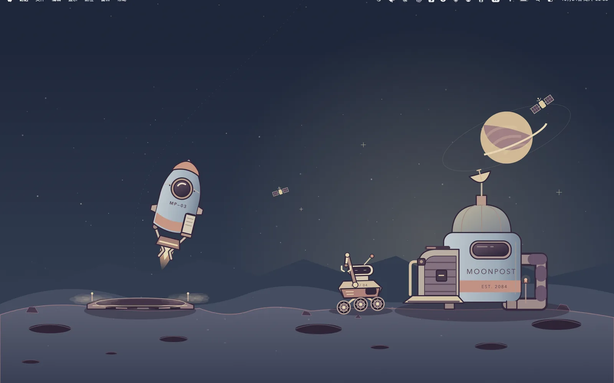
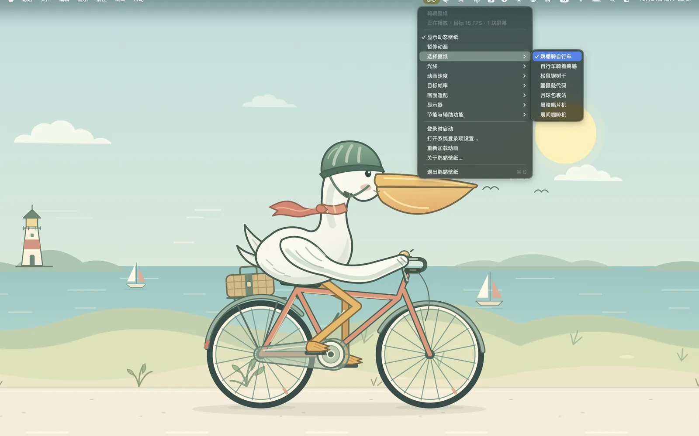
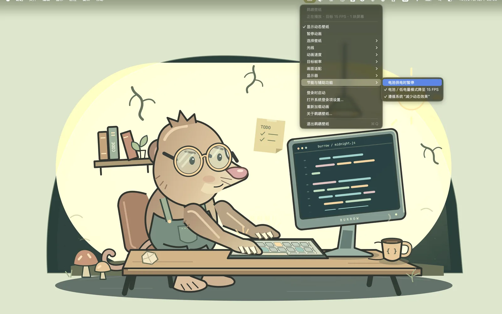
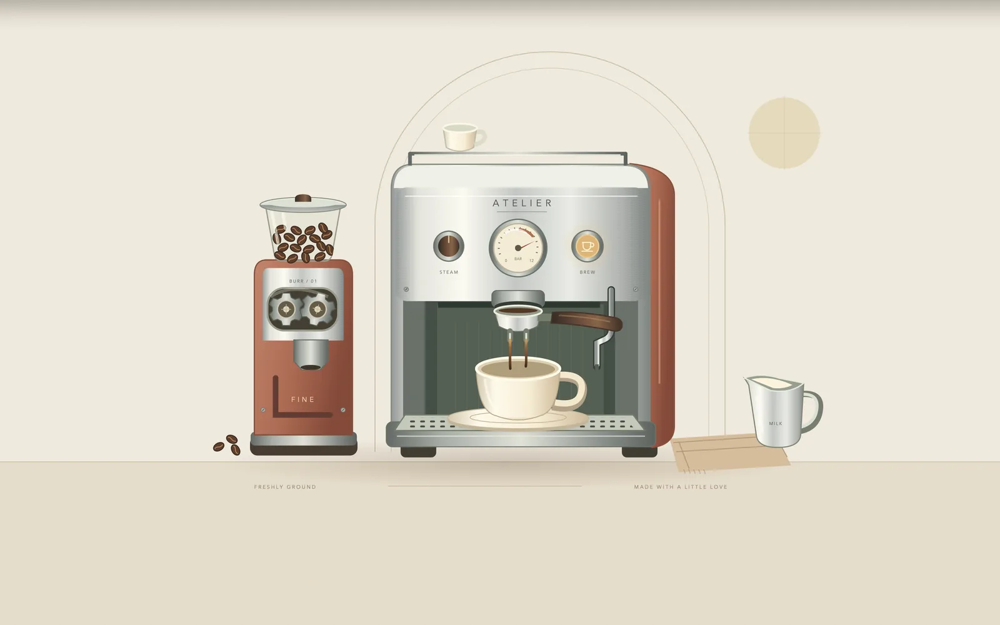

鹈鹕壁纸
让 Mac 桌面动起来，但不打扰你工作。
七段手绘动画在桌面图标后方安静循环。



七套会动的小世界
每一套都是手绘矢量动画，放大到 5K 屏也清清楚楚。从菜单栏随时切换。
脚踏、车轮和身体动作联动，一路蹬过云朵和公路。
同一个笑话，换个方向讲：这回轮到车骑鸟。
勤劳的小木匠拉着锯子，木屑在阳光里飞。
地下工坊里代码一行行滚动，咖啡冒着热气。
飞船降落卸下包裹，机器人一件件扫描收件，54 秒一个来回。
取碟、落针、播放、停转，36 秒走完一张唱片的仪式。
投豆、磨粉、萃取、拉花，最后再配一块饼干。
新壁纸会随免费更新加入，买一次，以后的都能用。
放在桌面上的样子



住在菜单栏里
没有主窗口，也不占 Dock。点一下屏幕顶部的小图标，所有设置都在这里。
- 🖼️选择壁纸七套壁纸随时切换，图标也会跟着变成自行车、树、月亮或唱片。
- 🌗光线白天、黄昏、夜晚，或按本机时间自动切换。不使用定位。
- ⏩速度与帧率0.5× 到 2× 播放速度，目标帧率 15、24、30 或 60 FPS。
- 🖥️画面与显示器扩展背景、等比铺满或完整原画；全部显示器或只放主屏。
动得起来，也停得下来
动态壁纸不该偷偷吃电。鹈鹕壁纸会看情况自己慢下来。
- 🔋电池模式降帧默认 30 FPS，用电池或低电量模式时自动降到 15 FPS。
- ⏸️用电池时暂停打开这个选项，拔掉电源就停在当前画面。
- 😴睡眠与锁屏电脑睡眠、显示器休眠或锁屏时自动暂停，回来接着播。
- ♿减少动态效果默认遵循系统的“减少动态效果”设置。
安安静静地陪着你
不挡操作
壁纸在桌面图标后方，点击直接穿透，不会抢走焦点。
不改系统壁纸
只在桌面层播放动画，退出应用，桌面马上恢复原样。
多显示器
每块屏幕都能放，插拔显示器、改分辨率会自动适配。
完全离线
所有动画都内置在应用里，不连网，也不加载任何外部内容。
登录时启动
可选开机自动启动，默认关闭，由你决定。
Apple 芯片与 Intel
通用应用，M 系列和 Intel Mac 都能运行，需要 macOS 13 或更新版本。
买一次，一直用
没有订阅，没有内购，没有广告。
全部七套壁纸
买下就能用全部壁纸和所有设置，没有隐藏的付费项目。
一次付费
在 Mac App Store 一次性购买，不是订阅，不会自动续费。价格以 App Store 显示为准。
免费更新
以后新增的壁纸随更新免费送达。换了 Mac，用同一个 Apple ID 重新下载即可。
常见问题
打开后找不到窗口？
鹈鹕壁纸没有主窗口，也不在 Dock 显示。点击屏幕顶部菜单栏里的壁纸图标（自行车、树、月亮等，随所选壁纸变化）就能打开菜单。
菜单栏里看不到图标？
菜单栏图标太多时，部分图标会被刘海挡住。可以暂时退出几个菜单栏应用，或按住 Command 键拖动图标调整位置。
为什么系统设置的壁纸列表里没有它？
鹈鹕壁纸在桌面图标后方播放动画，不是系统壁纸扩展，所以不会出现在“系统设置 › 壁纸”里，也不会改变锁屏画面。退出应用后桌面就恢复原样。
会不会很耗电？
默认目标帧率 30 FPS，用电池或低电量模式时自动降到 15 FPS；还可以在“节能与辅助功能”里打开“电池供电时暂停”。电脑睡眠、锁屏时也会自动暂停。
怎么开机自动启动？
在菜单里勾选“登录时启动”。如果显示“等待系统批准”，到“系统设置 › 通用 › 登录项”里允许鹈鹕壁纸即可。
支持哪些语言？
应用内菜单目前是简体中文。商店页提供简体中文和英文说明。
使用中遇到问题或有建议？发邮件到 liaotao.studio@gmail.com，附上 macOS 版本和截图，我们会尽快回复。